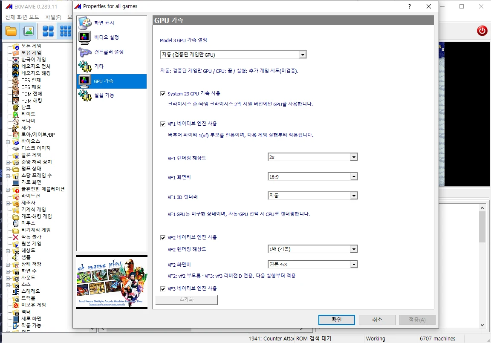
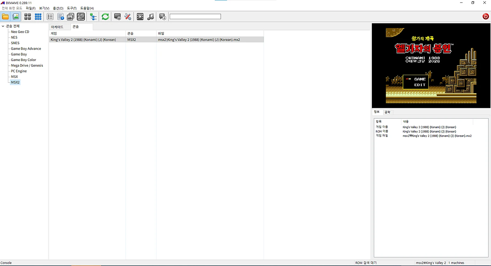
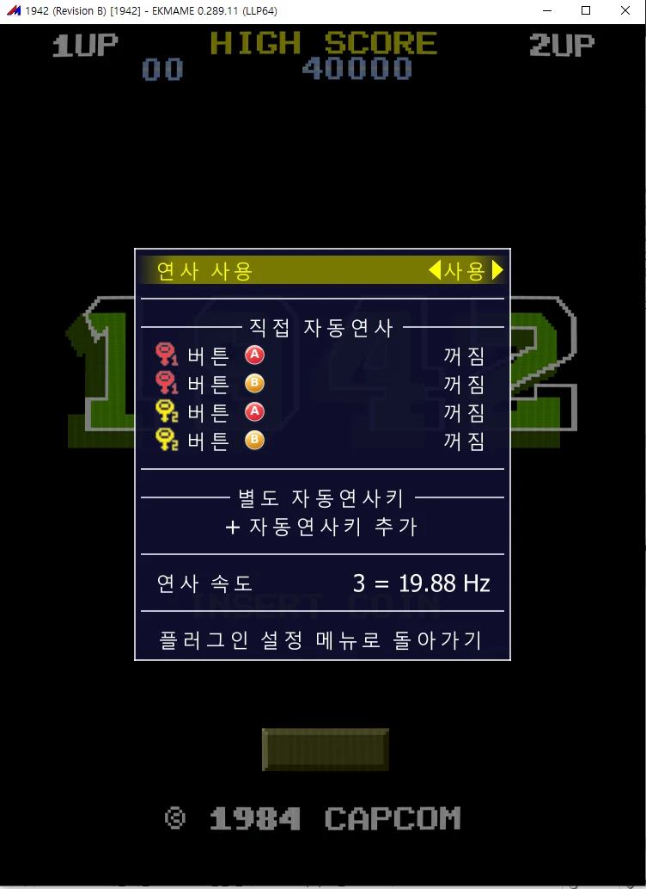
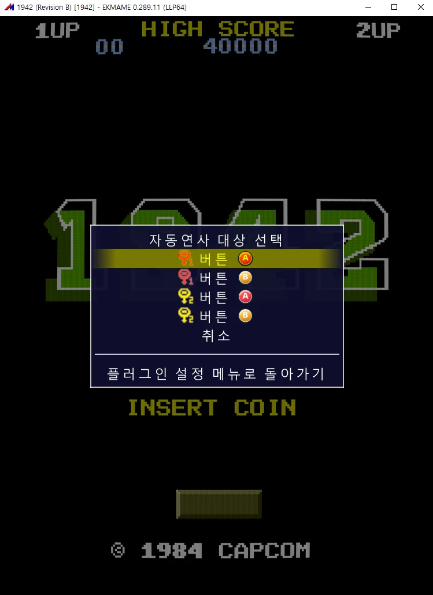
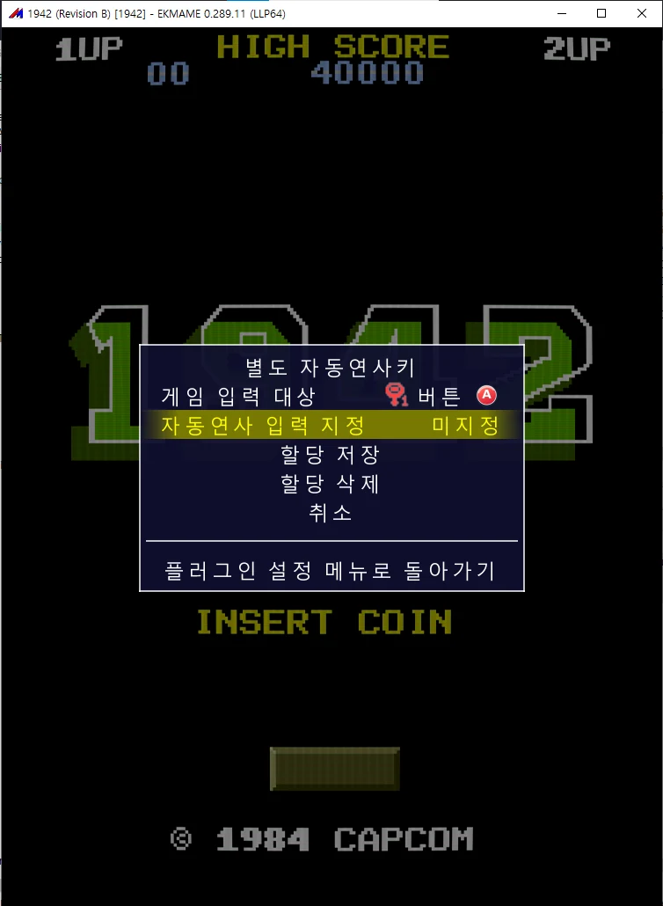
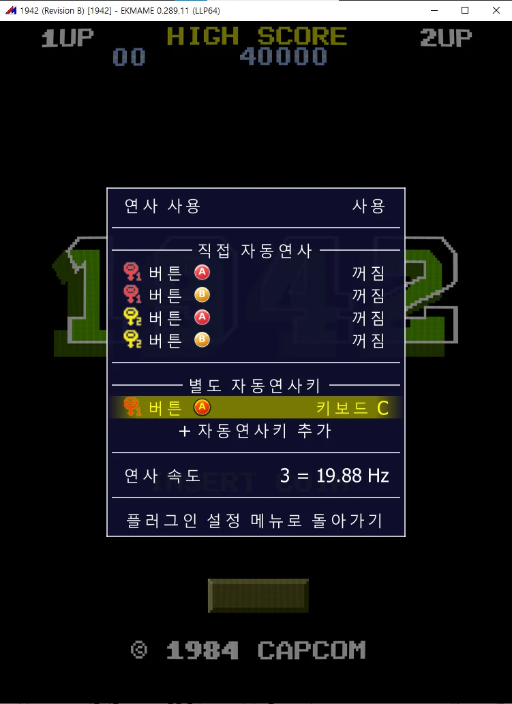
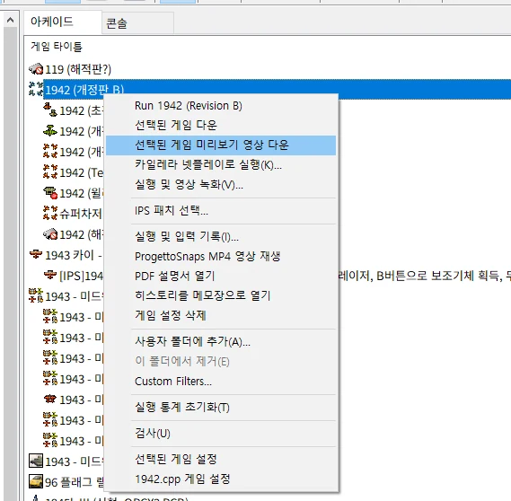
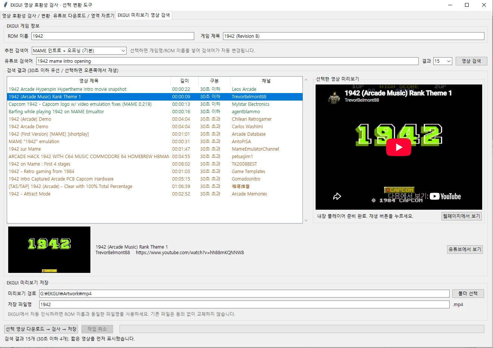

2026년 11월 18일 배포 글에 소개된 신규 기능 및 개선 사항입니다.
원본은 네이버 카페의 EKGUI 0.289.11 게시글입니다. 아래 화면은 해당 게시글 PDF의 첨부 이미지를 추출했으며, 실제 실행 환경에서 별도로 검증한 설명은 아닙니다.
버추어 파이터 1·2·3의 네이티브 실행 엔진이 추가됐습니다. VF1·VF2에서는 렌더링 해상도와 화면비를 설정할 수 있으며, VF3는 실험적 GPU 렌더링을 지원합니다. 16:9 및 21:9 와이드스크린 화면비를 지원합니다.

MSX 및 MSX2 게임 실행을 지원합니다. ROM·ZIP·7Z 및 MSX2 디스크 이미지 형식과 게임 실행 시 화면·키보드 입력 설정 개선이 포함됩니다.

게임에서 사용하지 않는 키보드 또는 조이스틱 버튼에도 자동연사키를 지정할 수 있습니다. 원하는 게임 버튼을 별도 자동연사키에 할당하고, 자동연사키를 추가·수정·삭제할 수 있습니다.
아래 4개 이미지는 설정 과정의 서로 다른 화면입니다. 빠짐없이 개별 이미지로 제공하며 각 이미지를 눌러 확대할 수 있습니다.




게임 목록의 오른쪽 클릭 메뉴에서 미리보기 영상 다운로드 기능이 추가됐습니다. 외부 영상 다운로드 도구를 연동하여 이용하는 방식입니다.


Samurai Shodown V Special Final Edition (samsh5fe) 및 Samurai Shodown V Perfect (samsh5pf)가 추가됐습니다.
언어팩과 각종 설정창의 번역 처리를 개선했습니다. 게임 목록 및 UI의 화면 깜빡임을 줄이고, 창 크기 변경 시 화면 갱신 안정성을 개선했습니다.